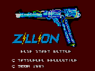

Zillion (MG)

This is a platform game for the Sega Master System where you guide the hero
through multi-level mazes to fulfill your mission objective. You have the
standard jump over obstacles and shoot the enemy controls at your disposal as
well as some other commands I think. The first mission describes some commands
that are supposedly at your disposal, but I haven't played the game much yet
to find out how to access these commands.
Zillion 2: The Tri-Formation (MG)
![[Zillion 2: The Tri-Formation]](images/SMS/zil2_sms.gif) This is another platform game for the Sega Master System. You must guide your
hero through the various levels battling the enemy along the way. Not a
spectacular game, but fun to play anyway.
This is another platform game for the Sega Master System. You must guide your
hero through the various levels battling the enemy along the way. Not a
spectacular game, but fun to play anyway.
Return to Emulator Table of Contents
Last Modified 5 Nov 1996
Created 2 Nov 1996
Luis A. Cruz
cruzl@ccs.neu.edu